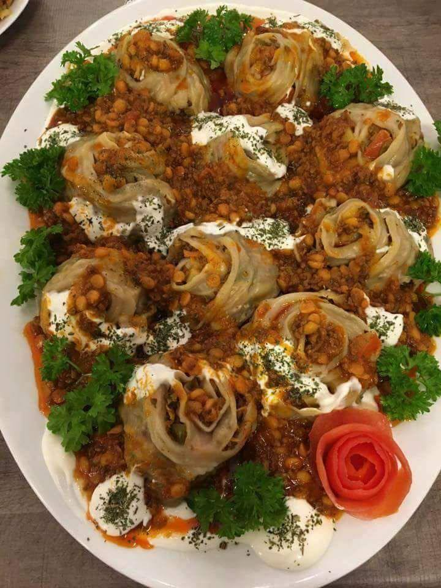
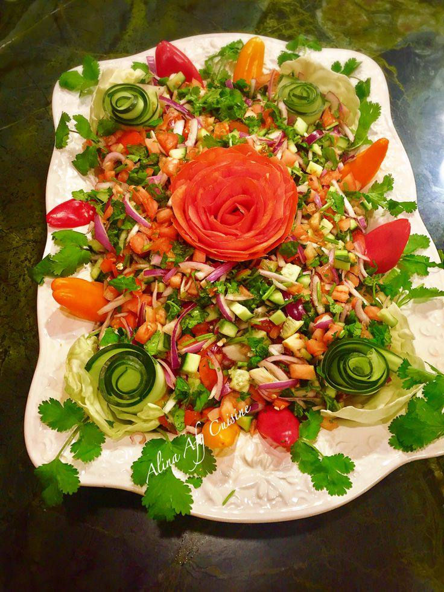
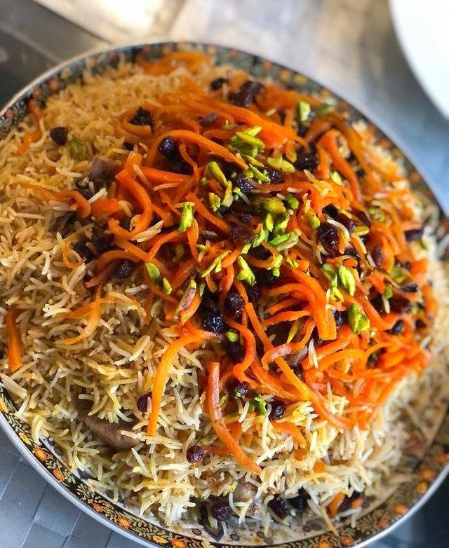
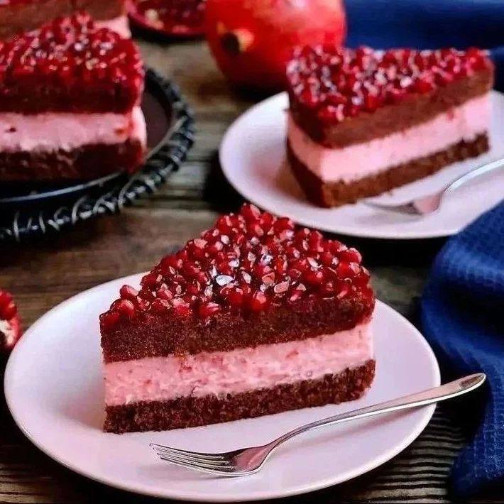
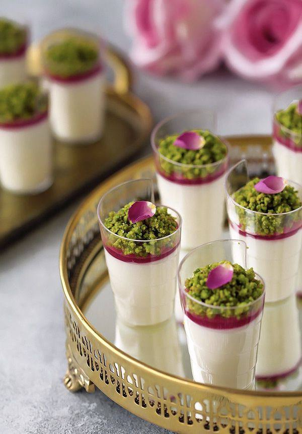
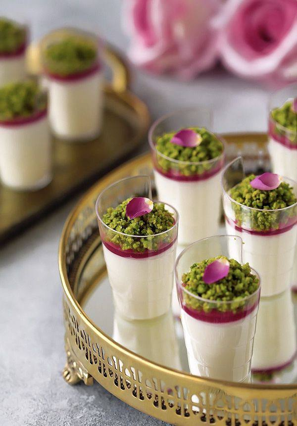

Welcome to My Recipe Book
Here you can discover a variety of delicious recipes from different categories such as desserts, appetizers, main courses, and more. This website allows you not only to explore tasty dishes but also to share your own favorite recipes with others. Cooking is a beautiful way to bring people together, and this recipe book is made for everyone who loves food, creativity, and sharing their passion for cooking. Feel free to add your recipes and become part of our cooking community!
Afghan Food
Here you can find the recipes for the best and most delicious Afghan dishes. From Kechiri Gosht Land to Ashak and Manto, we offer the finest dishes for the best tastes. Every bite of these dishes is an experience of unique and authentic flavors that will transport you to the delicious world of Afghan cuisine. Whether you’re looking to prepare a traditional meal for your family or seeking an Afghan dessert for a special occasion, we have a recipe for every occasion that will satisfy your cravings.
  


Afghan Desserts

 

Recipe of the Day
Afghan Food
Afghan Desserts
- Traditional Afghan Dishes
- Afghan Desserts
- Vegan & Vegetarian
- Quick & Easy Meals
- Afghan Salad
- Rice & Kebab Dishes